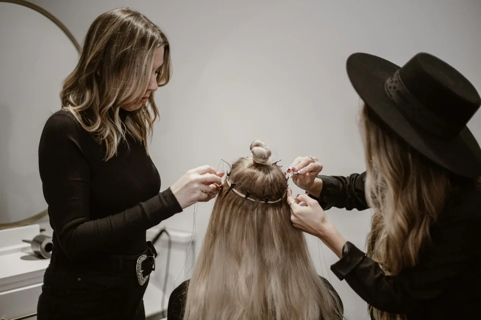

There is no universal waiting period for hair extensions after chemotherapy. The right time depends on how much hair has regrown, whether those strands can support an attachment, and how your scalp feels after treatment. A few inches of new growth may be enough for a consultation without being strong enough for installation.
At Luxe Aura Hair Extensions in Greenwich Village, we work with clients considering their hair options after cancer treatment. We assess hair density, texture, and strength before recommending any method. Your oncology team or dermatologist should also be involved when recovery, ongoing treatment, or scalp sensitivity raises concerns.
How Does Hair Grow Back After Chemotherapy?
Chemotherapy hair loss happens because certain cancer drugs affect rapidly dividing cells, including those in hair follicles. Not everyone loses all their hair, and the recovery pattern differs with the treatment received.
Hair regrowth often begins after treatment finishes, but new strands may initially be finer, softer, curlier, straighter, or a different color. Some people notice uneven coverage or persistent hair thinning. These changes may gradually settle, although recovery isn't identical for everyone.
New growth can be particularly vulnerable to breakage, making gentle washing, brushing, and styling important. Because regrowth changes over time, an extension method that is unsuitable now may become an option later.
If hair loss continues, the scalp remains inflamed, or growth seems unusual, seek advice from your healthcare team before considering an attached hairstyle.
When Is It Safe to Get Hair Extensions After Chemotherapy?
The calendar alone cannot establish readiness. Newly regrown hair needs enough strength and density to carry an extension without uncomfortable pulling, and the scalp should be free from irritation or tenderness.
At Luxe Aura Hair, clients with approximately three to four inches of regrowth can begin discussing options. That measurement is a consultation starting point, not medical clearance or a guarantee that installation is appropriate.
Cancer support organizations advise postponing extensions while newly regrown hair remains fragile because additional tension can cause damage. We encourage you to check with your treating clinician, especially if your treatment is ongoing or you have persistent scalp symptoms.
At our salon, we examine hair condition and discuss attachment weight, placement, and maintenance. If there isn't enough healthy hair to support an application comfortably, waiting or exploring a different coverage option may be the more sensible decision.
Which Hair Options Can You Consider During Hair Regrowth?
Hair extensions can add length and volume when there is sufficient healthy natural hair to support them. Luxe Aura Hair offers microlink and K-tip methods for post-chemotherapy consultations, with the choice depending on the individual assessment. Neither method is risk-free for fragile growth.
Our human hair extensions are selected for color and texture matching, but the hair's quality does not remove the need for careful attachments or suitable natural hair density. If you need broader coverage during early recovery, human hair wigs or other hair replacement systems may be worth discussing. We offer lace-front wigs, which can provide coverage without attaching extension sections throughout fragile regrowth, although fitting methods and scalp comfort still matter.
Hair toppers may suit localized thinning along the part or crown. Their attachment methods also require assessment, and we do not list them as a dedicated Luxe Aura service. These are cosmetic choices, not medical hair restoration treatments.
How to Care for Fragile Hair Before Getting Extensions
Give your new hair time to recover. Use gentle products recommended by your healthcare team, avoid tight hairstyles, and limit heat or vigorous brushing that could lead to breakage.
Pay attention to itching, soreness, flaking, or strands breaking close to the scalp. Don't cover persistent irritation with an attachment or assume discomfort is normal. If an extension method feels heavy or requires tension to stay secure, discuss alternatives. Care instructions should also account for any scalp changes caused by ongoing medication. When in doubt, postpone installation and ask your clinician whether your scalp is ready for styling services.
How to Choose the Right Hair Extension Salon in NYC
Look for a salon willing to assess your hair before recommending an installation. Ask how each attachment works, what maintenance involves, and how extensions would be removed if they become uncomfortable.
At our Greenwich Village studio, we offer consultations for clients after chemotherapy. We consider hair length, strength, texture, and the amount of coverage you're seeking. Our semi-private setting also gives you space to discuss personal concerns. A good consultation leaves room for the answer to be "not yet." You should understand the options and potential risks before proceeding.
Frequently Asked Questions
How Long Should You Wait After Chemotherapy to Get Hair Extensions?
There is no universal timeline. Your clinician and stylist should assess hair strength, scalp condition, and recovery before installation.
Can You Wear Hair Extensions While Your Hair Is Growing Back?
Possibly, once natural hair can support the weight and attachments without excessive tension. Short regrowth alone does not establish readiness.
Are Wigs or Hair Toppers Better During Early Hair Regrowth?
They may offer coverage when extensions are unsuitable. The choice depends on the affected area, attachment method, and scalp comfort.
Can Hair Extensions Damage Newly Regrown Hair?
Yes. Excess weight, tight bonds, pulling, or unsuitable maintenance can cause breakage and worsen thinning.
Discuss Your Options With Luxe Aura Hair
The decision to get hair extensions after chemotherapy should begin with your hair's current condition, not a deadline. We can discuss extensions, lace-front wigs, and other appropriate coverage options alongside guidance from your healthcare team.
If you're considering hair salons for hair extensions in NYC, explore Luxe Aura Hair and our post-chemotherapy consultation service before booking.